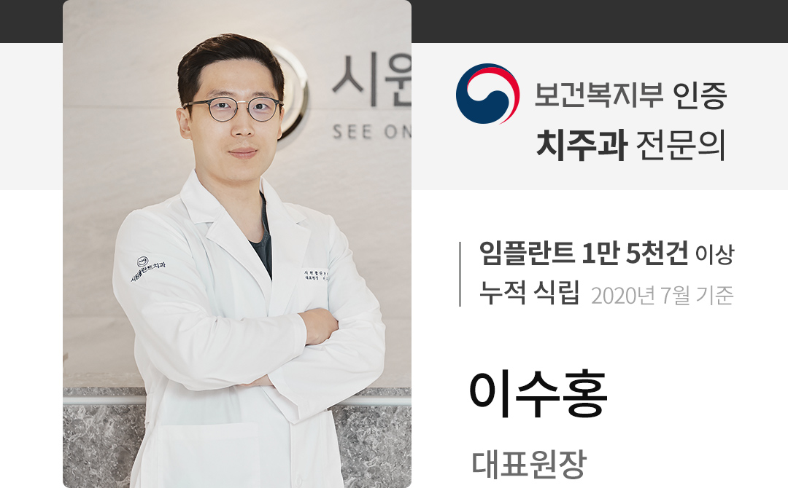
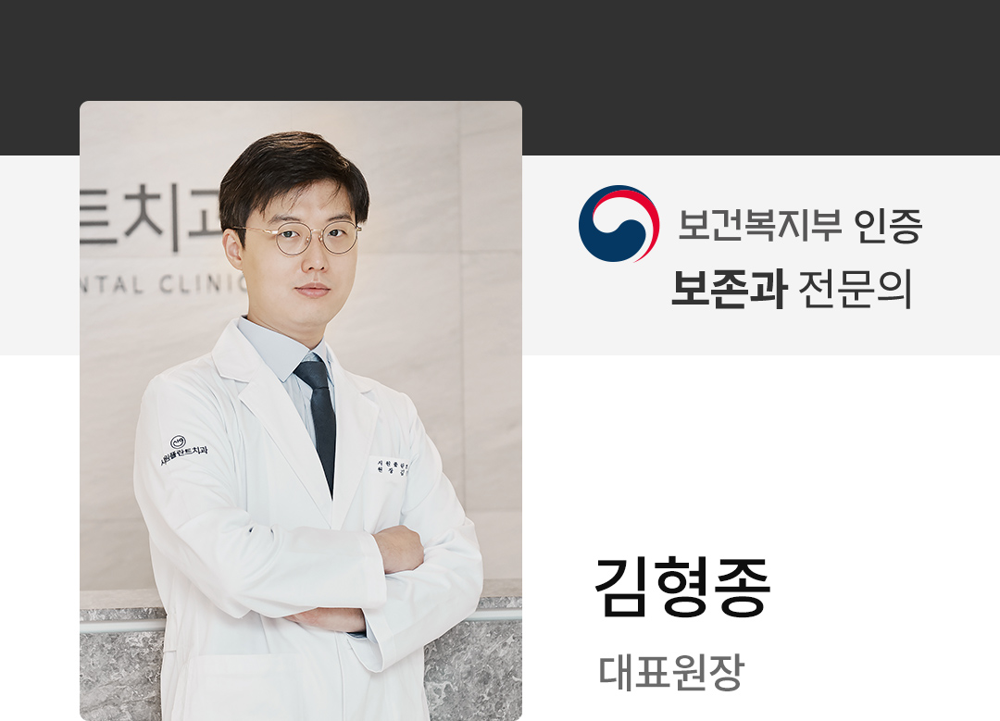

당신의 치료를 책임질 수준높은 의료진
시원플란트치과 의료진 소개

- 단국대학교 치과병원 치주과 외래교수
- 대한치주과학회 인정의
- 단국대학교 치과대학 치주과 석사
- 단국대학교 치과병원 인턴 및 치주과 레지던트 수료
- 덴티스 임플란트 자문위원
- 대한 치주과학회 정회원
- 대한 구강악안면 임플란트학회 정회원
- 대한 치과근관치료학회 평생회원
- 대한 치과 감염관리학회 회원
- ITI(International Team of Implantology) 정회원
- EBIA(Evidence Based Implant Association) 연구위원
- 전)국군의무사령부 치무장교
- 전)한아의료재단 임플란트 수석 연구원
- 전)대전 수연합치과 치주과장

- 대한 치과보존학회 인정의
- 연세대학교 치과대학 석사
- 단국대학교 치과대학 졸업
- 고려대학교 구로병원 인턴
- 이대목동병원 보존과 레지던트
- 대한 치과보존학회 정회원
- 대한 치과근관치료학회 정회원
- Osstem implant master course
- 턱관절장애교육연구회 턱관절 치료과정